Projects
fwubbo: Personal Dashboard Wrapper
A personal dashboard I made for daily use. Streams Claude API to allow for modifications to widgets and creating new widgets and themes. Useful for saving all the visualization tools I've ever made in one place!
GitHub Link
GitHub Link
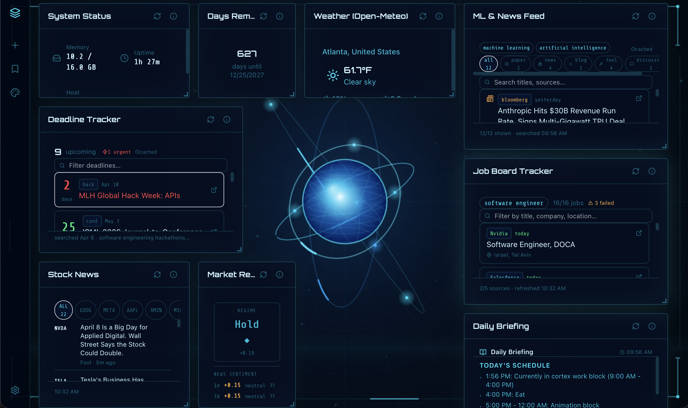
Forsaken (VG Dev Club)
I worked on the level design process and created asset sheets and other assets. I also assembled levels from asset sheets in Unity2D.
GitHub Link
GitHub Link
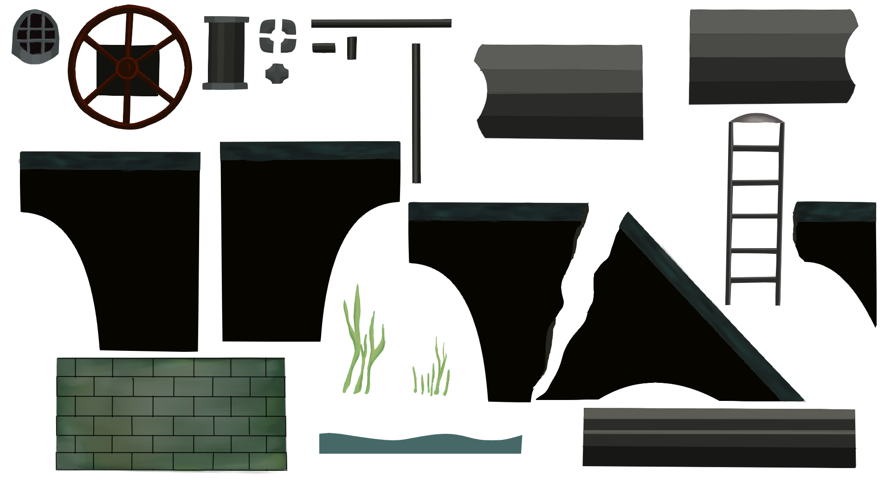
Smart Selection Blender Extension
This tool can be used to select similar repeating elements in a mesh that do not necessarily have to be identical, select similar islands quickly, find matching geometry with slight shape variations, and expand or contract current selection quickly or select just the boundary of a complex selection.
Blender Link
Blender Link
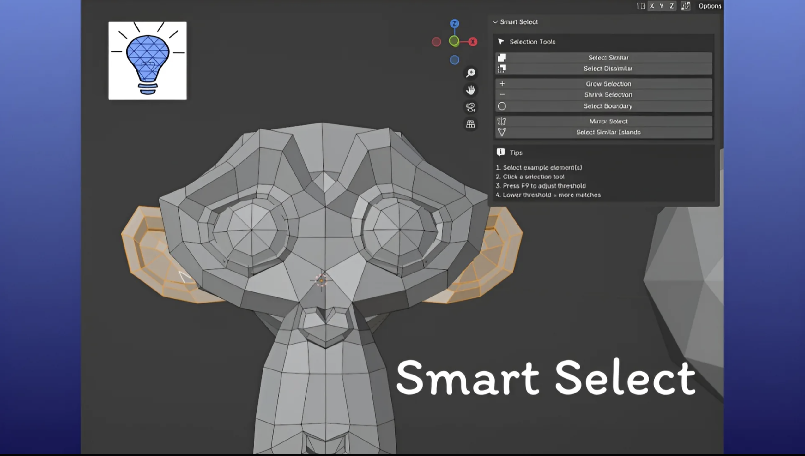
IK/FK Snapping Blender Extension
This IK-FK snapping tool allows snapping of IK bones to FK and vice versa while animating with humanoid rigs and can be found in the Animation tab. It works on a variety of rig types and snaps seamlessly in one click. IK matches to FK bone rotation.
Blender Link
Blender Link
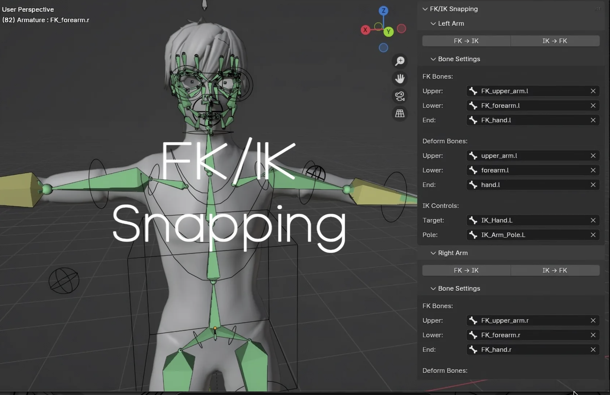
Quantum Fourier Tranform Convergence
Designed and validated quantum–classical FFT Fourier analysis pipeline simulating QFT circuits, evaluating L^2 stability, discretization error, and phase alignment over 1000+ Monte-Carlo quantum shot simulations.
GitHub Link
GitHub Link
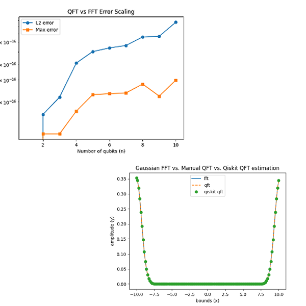
Mandelbrotian Volatility Options Trading Model
Engineered a fractal regime-detection OTM options strategy with Hurst exponents (DFA), Hill tail-index, and multifractal spectral width to classify volatility regimes achieving 60+% CAGR and 1.18 Sharpe across 105 trades from 2020-2025.
GitHub Link
Quantconnect Link
GitHub Link
Quantconnect Link
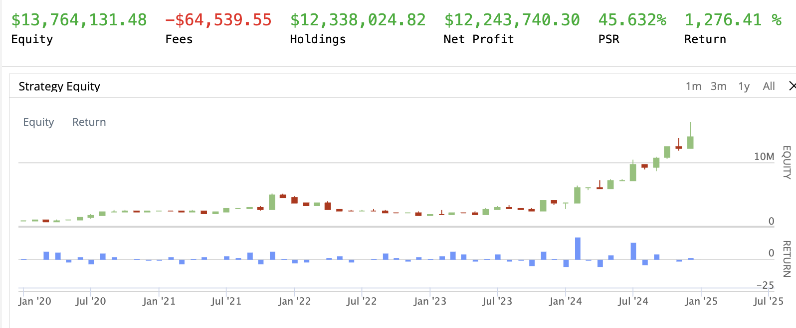
Darwin: Agentic Evolving GPT
Developed a proof-of-concept for a Darwin-Gödel model using genetic algorithms applied to GPT agents that iteratively modify and improve their own training code. Features a live chat window enabling model requests for new datasets and library upgrades. I plan to continue this project soon with finetuning 30B models and removing the API calls.
GitHub Link
ArXiV
GitHub Link
ArXiV
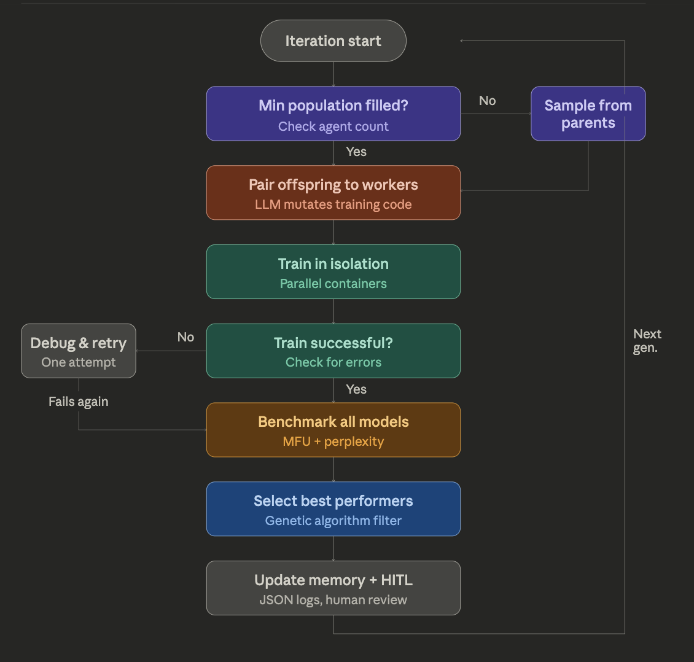
3DCNN for Confidence Prediction in Visual Perception Tasks
Research team project for computational neuroscience class. We trained a 3DCNN on fMRI data on a dataset with confidence data corresponding to visual perception tasks. I did the bulk of the coding and converted the data to MATLAB format and converted the 3DCNN model from Tensorflow v1 to v2. Our model was unfortunately unable to draw correlations from the data.
GitHub Link
GitHub Link
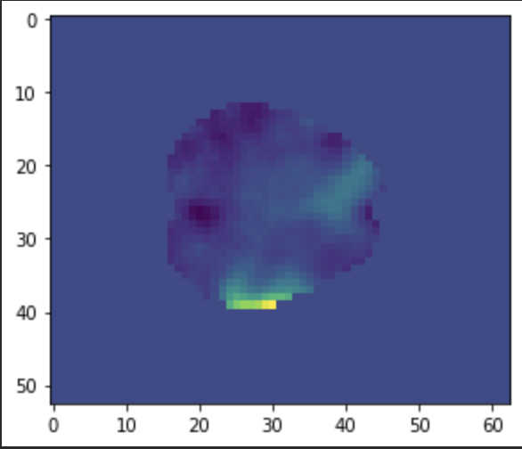
fast-dLLM Bisection Sampling
Natural Language Processing class project. Proposed and implemented a bisection sampling method to alleviate the KV caching issues of diffusion LLMs. I implemented the sampling method on fast-dLLM and conducted the runs to collect the results on gms8k.
GitHub Link
GitHub Link
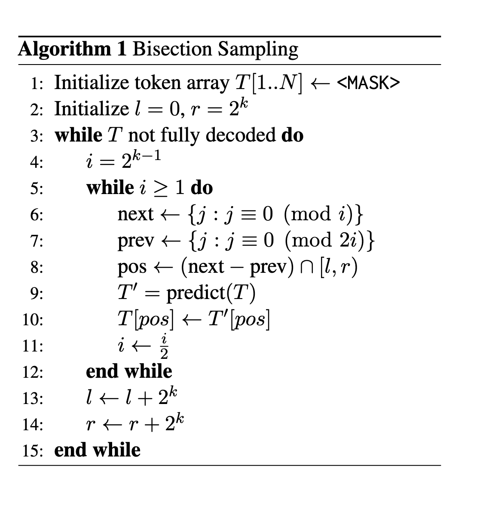
Wandersync Travel Planning App
Team Project for CS 2340. Coordinated multiple sprints with Jira, with a focus on SOLID and GRASP principles. Firebase backend support for 100+ users and tabs for dining, transportation, and hotel planning as well as a social media tab.
GitHub Link
GitHub Link
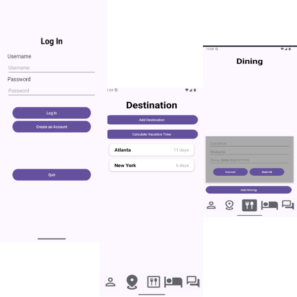
Meal Max: AI Satiety Nutrition Tracker
Team project submission for GT Hackalytics 2024. CNN trained for prediction of satiety of unknown foods, and OCR implemented to scan nutrition labels. Tracks satiety and macronutrients across the day. I worked on the frontend and hooking the backend up.
GitHub Link
GitHub Link
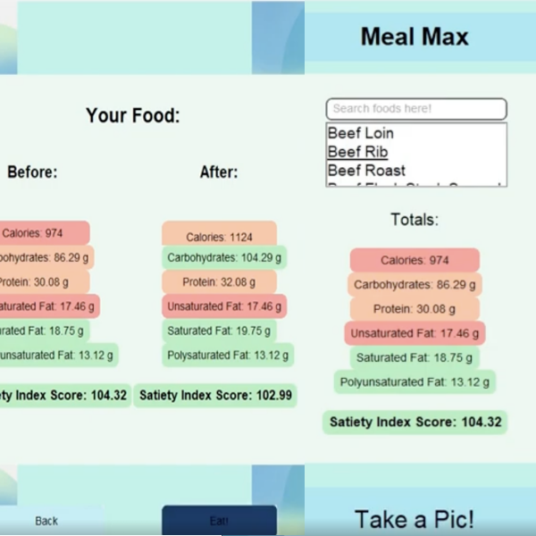
MatStructPredict Particle Swarm with Local Optimization
Contributed to the development of atomic structure prediction and reconstruction graph neural network (GNN) models for lab packages MatDeepLearn and MatStructPredict. Coded optimizer with PyTorch, ASE, PySwarms, and Mattersim with a 40% match rate using particle swarm optimization for lattice parameter calculations.
GitHub Link
GitHub Link

Batstick: Smart Walking Aid
Jointly designed an walking aid for the visually impaired in collaboration with VIBUG. Device converted ultrasonic readings into an array of vibration motors reading the position of objects with over 80% accuracy. Featured on Fox News and placed Top 12 at the National Innovator Challenge.
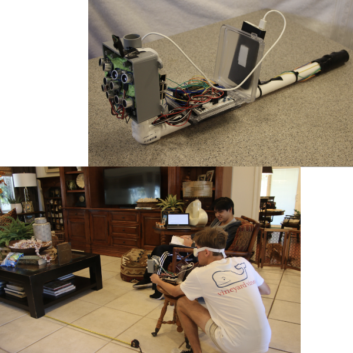
Automated Intersection Management for Self-Driving Vehicles
Designed an AI-based intersection management system improving simulated traffic flow by 50% using Pygame, Q-learning, and a Double Q-table approach. Built a physical Raspberry Pi car with YOLOv3-mini and OpenCV for lane detection and motor control.
GitHub Link
GitHub Link
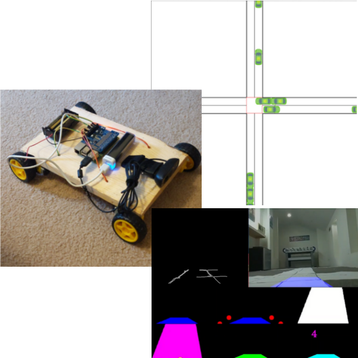
Skills
Java
Python
C/C++/C#
HTML/JS/CSS
Tensorflow/Pytorch
Postgres
AWS
Docker
React
Typescript
Pandas
Node.js
JUnit
JIRA
About Me
I like coding, art, and animation, and I work on some AI and 2D/3D animation projects in my free time. I hope to get better each and every day to create incredible works.

You can contact me at: henryyjiang42@gmail.com | (850) 387-6688
Favorite Anime: Blue Lock
Favorite Manga: Tokyo Ghoul
Currently Watching: Witch Hat Atelier, Re:Zero, Dorohedoro
Last Completed: Fire Force - 6.9/10
Favorite Song: Shelter - Porter Robinson
Favorite Music Artist: Ado
Favorite Games: Nier: Automata, Limbus Company, Pokemon Showdown
Favorite Manga: Tokyo Ghoul
Currently Watching: Witch Hat Atelier, Re:Zero, Dorohedoro
Last Completed: Fire Force - 6.9/10
Favorite Song: Shelter - Porter Robinson
Favorite Music Artist: Ado
Favorite Games: Nier: Automata, Limbus Company, Pokemon Showdown